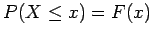

Inhalt Index DeskTop Bronstein

 Wahrscheinlichkeitsrechnung und Mathematische Statistik Wahrscheinlichkeitsrechnung Zufallsgrößen, Verteilungsfunktionen Verteilungsfunktion
Wahrscheinlichkeitsrechnung und Mathematische Statistik Wahrscheinlichkeitsrechnung Zufallsgrößen, Verteilungsfunktionen Verteilungsfunktion


Durch die Einführung der Verteilungsfunktion und der Wahrscheinlickeitsdichte in (16.44) und (16.46) kann die Wahrscheinlichkeit  als Flächeninhalt interpretiert werden, und zwar als Inhalt der Fläche zwischen Dichtefunktion f(t) und der Abszisse im Intervall  (s. linke Abbildung).
(s. linke Abbildung).
Häufig wird eine Wahrscheinlichkeit  vorgegeben. Gilt
vorgegeben. Gilt
| (16.48) |
dann nennt man die zugehörige Abszisse Quantil oder auch Fraktil der Verteilung (s. rechte Abbildung).
Das bedeutet: Der Flächeninhalt unter der Dichtefunktion f(t) rechts von ist gleich  .
.
Hinweis: In der Literatur wird allerdings auch die Fläche links von zur Definition des Quantils verwendet.
In der mathematischen Statistik wird für kleine Werte  (z.B. oder ) manchmal der Begriff Irrtumswahrscheinlichkeit verwendet. Die dazugehörigen Quantile sind für die wichtigsten praktischen Verteilungen tabelliert worden (s. Tabelle POISSON-Verteilung bis Tabelle STUDENT-Verteilung).
(z.B. oder ) manchmal der Begriff Irrtumswahrscheinlichkeit verwendet. Die dazugehörigen Quantile sind für die wichtigsten praktischen Verteilungen tabelliert worden (s. Tabelle POISSON-Verteilung bis Tabelle STUDENT-Verteilung).